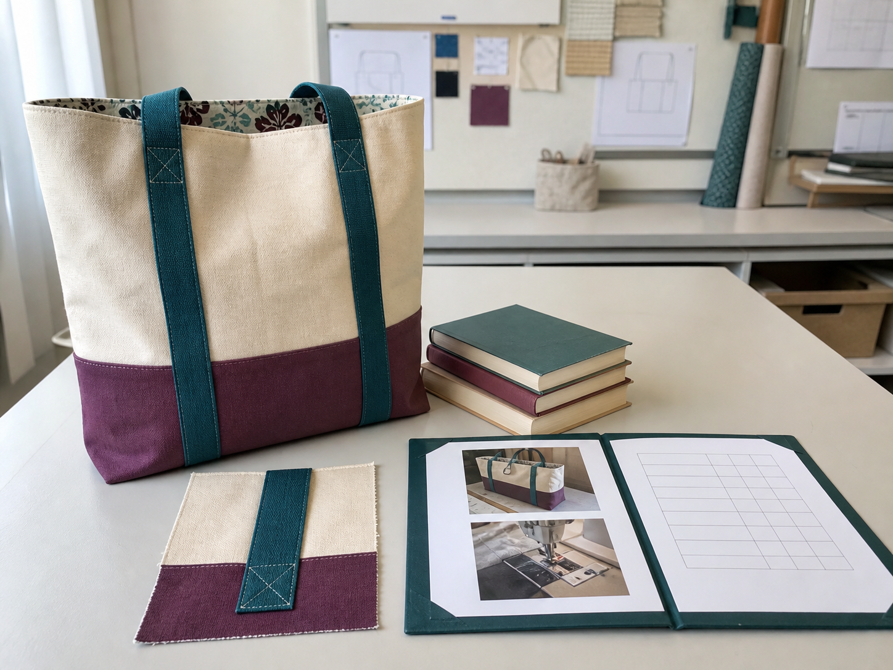

Section 1
Testing Functionality, Aesthetics, Durability and Ergonomics
Learning purpose: Teach students to convert broad success ideas into fair tests and evidence-based evaluations of the completed carry item.
Evaluation is a reasoned judgement: it connects a criterion, a fair test, an observation and a conclusion about the product.
Functionality asks whether the carry item performs its intended job for its user. A fair test uses a realistic task and records what happens. The observation should be specific, such as whether the opening gives suitable access or the carrying system remains secure during the intended use.
Aesthetics concerns the product's visual and sensory qualities. An evaluation can consider the relationship between colour, form, decoration, proportion and finish. ‘I like it’ is a preference; an evidence-based judgement explains how those choices support the design intention and user.
Durability concerns how well the product and its connections resist expected wear. Seams, raw-edge treatments, strap joins or casings can be inspected and tested in a controlled way. Durability is not proven by one glance, so the evaluator combines construction evidence with an appropriate use test.
Ergonomics examines the interaction between product and user. Comfort, access, handling and suitability for the intended load can be observed. A fair comparison uses the same conditions, records limitations and avoids overloading the product beyond its intended use.
Key vocabulary
- criterion
- A stated feature or condition used to judge how successfully a design meets its purpose.
- functionality
- How effectively a product performs its intended job.
- durability
- The ability of a product or connection to withstand expected use over time.
- ergonomics
- The relationship between a product, the user and safe, comfortable, effective use.
Evaluating a carrying system
- State the criterion: the carrying system should remain secure and comfortable during the intended use.
- Design a controlled test that reflects that use without overloading the product.
- Record specific observations about movement, join security, access and user comfort.
- Judge the result, identify a limitation and recommend one realistic improvement linked to the evidence.
Conclusion: The conclusion is credible because it follows from a relevant test and specific observations rather than appearance alone.
Ideas to challenge
- A product is successful if its maker likes how it looks, so no test is needed.
- Durability can be proven by deliberately overloading and damaging the product.
- One vague observation can evaluate all criteria equally well.
Build a fair test
Name one criterion, use realistic controlled conditions and record observable results.
Separate the criteria
Function is what it does, aesthetics is how choices communicate and appear, durability is resistance to expected wear, and ergonomics is the user-product interaction.
Write the judgement
Use test evidence to make a conclusion, acknowledge a limitation and propose a linked improvement.
Complete non-video pathway
Design a fair test
Planning controlled conditions and possible observations teaches the exact evidence chain before the student's product is tested.
Before
- Read the adjacent definitions of functionality, aesthetics, durability and ergonomics.
- Choose one criterion and inspect the criterion–test–observation–judgement visual.
During
- Write exactly what successful performance would look like.
- Plan realistic conditions, what will remain the same and what evidence will be observed.
- Predict two possible results and write how each would affect the judgement or improvement.
After
- Obtain any required teacher approval before product testing.
- Record the result, limitation and improvement when the fair test is completed.
Evidence to keep: A controlled test plan and an evidence-ready evaluation frame.
Check, apply and save evidence0/10 + response
Answer all ten checks. Feedback appears after each choice, so use it to revisit the linked theory before continuing.
Higher-order response
Explain your thinking
Evaluate a completed reusable carry item against functionality, aesthetics, durability and ergonomics using a fair-test evidence chain.
Build your response
- State what successful performance would look like for each criterion.
- Describe realistic controlled tests and the observations they would collect.
- Explain where the product meets, partly meets or does not yet meet each criterion.
- Identify limitations and propose improvements that directly answer the evidence.
Success looks like
- Distinguishes the four criteria accurately.
- Supports judgements with relevant, observable test evidence.
- Links limitations to realistic improvements.
Nothing saved yet.
Resume this packageSection 2
Evaluating Ethics, Environmental Impact and Safety
Learning purpose: Extend evaluation beyond product performance by considering consequences for people, environment and safe production practice.
A responsible design evaluation asks not only ‘Did it work?’ but also ‘What consequences came from making and using it?’
Ethical evaluation considers people affected by design and production decisions. Questions may include whether choices were respectful, whether claims about materials were honest and whether the product responds fairly to its intended user. Ethical reasoning should name who may be affected and explain the consequence rather than applying a vague label.
Environmental evaluation examines resources, waste, durability, reuse and the problem the design set out to address. A reusable carry item can reduce reliance on some single-use items only if it is suitable enough to be used repeatedly. Durability and user acceptance therefore influence environmental performance.
Safety evaluation reviews behaviours and decisions across the process. Evidence may include following teacher instructions, keeping fingers clear at the machine, working at a controllable speed, securing loose clothing and jewellery, handling needles and scissors correctly, using dry hands around electrical equipment and checking fabric before ironing.
A balanced conclusion avoids absolute claims. It explains a benefit, a remaining impact or limitation and one realistic improvement. Product quality, ethical responsibility, environmental impact and safe practice can support one another, but trade-offs should still be acknowledged.
Key vocabulary
- ethics
- Reasoning about effects on people, fairness, respect and responsible choices.
- environmental impact
- The effects a product and its life cycle have on resources, waste and natural systems.
- reuse
- Using a product repeatedly for its intended or adapted purpose rather than discarding it after one use.
- balanced conclusion
- A judgement that explains benefits, limitations, evidence and realistic improvement.
Evaluating a reuse claim
- State the claim: the carry item is intended to replace some single-use carrying items.
- Identify evidence needed, including usability, durability and whether the intended user is likely to reuse it.
- Record benefits as well as remaining material, waste or production impacts.
- Write a balanced conclusion and suggest one improvement that could increase useful life or repeated use.
Conclusion: The environmental claim is credible only when expected reuse is supported by product evidence and limitations are acknowledged.
Ideas to challenge
- Any product labelled reusable automatically has no environmental impact.
- Safety evidence is a promise that nothing went wrong rather than a record of specific behaviours and decisions.
- Ethics is only about personal preference and does not require identifying affected people or consequences.
Trace effects on people
Name who may be affected, the design or production choice involved and the likely ethical consequence.
Evaluate environmental impact
Consider resources, waste, durability, likely reuse and the original environmental problem together.
Use safety evidence
Identify a specific safe behaviour, explain the hazard it controls and record honest evidence without claiming teacher verification.
Complete non-video pathway
Claim, evidence, limitation
Interrogating a reuse claim against product, people, environmental and safety evidence teaches the same balanced conclusion.
Before
- Read the adjacent ethics, environmental impact and safety explanation.
- Study the bag life-cycle visual and state the reuse claim to be tested.
During
- List evidence that would support repeated safe and useful use.
- Identify one effect on people, one environmental limitation and one relevant safe-production behaviour.
- Write a balanced conclusion that narrows the claim and proposes one improvement.
After
- Separate student reflection from any formal teacher safety verification.
- Check that the final statement acknowledges a benefit, limitation and realistic improvement.
Evidence to keep: A balanced claim–evidence–limitation conclusion.
Check, apply and save evidence0/10 + response
Answer all ten checks. Feedback appears after each choice, so use it to revisit the linked theory before continuing.
Higher-order response
Explain your thinking
Evaluate the ethical, environmental and safety dimensions of producing and using a reusable personal carry item.
Build your response
- Identify people affected by two design or production choices and explain the consequences.
- Examine resources, waste, durability and likely reuse in relation to the original environmental purpose.
- Use specific safe behaviours and the hazards they controlled as process evidence.
- Write a balanced conclusion with a benefit, limitation and realistic improvement.
Success looks like
- Uses specific cause-and-effect reasoning about people, environment and safety.
- Avoids unsupported absolute claims and acknowledges trade-offs.
- Links the proposed improvement to identified evidence.
Nothing saved yet.
Resume this packageSection 3
Assembling Folio, Practical and Safety Evidence
Learning purpose: Help students organise authentic evidence into a coherent learning story while separating records from formal teacher verification or submission.
A strong folio is not a scrapbook of everything collected; it is an organised explanation of how a design developed, was produced, tested and evaluated.
Design evidence shows the reasoning before production. It may include the design situation in the student's own words, research notes, labelled ideas, criteria, feedback and a justified final direction. Each item needs a caption that explains what decision it supports.
Process evidence shows development during making. Useful records include labelled technique samples, an action plan, short notes about checkpoints, and images or sketches that show a production decision. Evidence should be privacy-safe and captured only through the approved class process.
Product evidence shows the completed outcome and its test results. It can record function, appearance, durability and ergonomics, then connect those observations to ethics, environmental impact and improvement. Practical evidence describes what was made or observed; it does not prove that a teacher has formally verified performance.
Safety evidence identifies specific behaviours and the hazards they controlled. A student can reflect honestly on preparation, machine control, tool handling and checking routines, but cannot award a formal safety judgement. Before final use, the evidence set should be reviewed for gaps, clear captions, truthful claims, readable order and a separate backup.
Key vocabulary
- folio
- An organised collection that explains design thinking, production, testing and evaluation.
- caption
- A short explanation that gives an evidence item context and states what it shows.
- authentic evidence
- A genuine record connected to the student's own decisions, actions, observations or learning.
- verification
- Confirmation by an authorised person or process; a student record alone does not create it.
Turning an image into useful process evidence
- Select an approved image or sketch that shows one visible production decision rather than an unrelated classroom moment.
- Caption what stage is shown and which part of the action plan it connects to.
- Explain the quality or safety check made at that point and the evidence observed.
- Record any resulting change and make sure the item contains no private information outside the approved process.
Conclusion: The item becomes meaningful evidence because the caption connects the visual record to a decision, check and result.
Ideas to challenge
- More pages automatically make a folio stronger even when evidence is repeated or unexplained.
- A student photograph or self-check proves formal teacher verification.
- Captions only need to name what is visible and do not need to explain its significance.
Organise the evidence story
Arrange design, process, product and evaluation records so each stage leads logically to the next.
Caption for meaning
State what the item is, when it matters, what it shows and which decision or criterion it supports.
Keep claims truthful
Separate student records and reflections from teacher verification, formal submission and current assessment decisions; check privacy and create a backup.

Complete non-video pathway
Evidence triage desk
Sorting, captioning and rejecting unsupported claims creates the same coherent evidence story from the student's own records.
Before
- Read the adjacent distinction between design, process, product, evaluation and formal verification.
- Gather only privacy-safe evidence approved through the class process.
During
- Sort each item into design, process, product, evaluation or not yet useful.
- Rewrite two captions so each states what the evidence shows and the decision or criterion it supports.
- Flag privacy risks, missing evidence and any claim that incorrectly suggests teacher verification or formal submission.
After
- Order the accepted items into a coherent learning story.
- Create a separate backup and follow the current teacher-directed submission process only when confirmed.
Evidence to keep: A reviewed evidence set with meaningful captions, flagged gaps, truthful status and backup confirmation.
Check, apply and save evidence0/10 + response
Answer all ten checks. Feedback appears after each choice, so use it to revisit the linked theory before continuing.
Higher-order response
Explain your thinking
Design a coherent evidence plan that explains the journey from design decisions through production, safety, testing and evaluation without overstating its status.
Build your response
- Select authentic records for design, process, product and evaluation stages.
- Explain what each item shows and draft a caption linking it to a decision or criterion.
- Identify privacy checks, evidence gaps and a separate backup method.
- Distinguish student records and reflections from teacher verification, formal submission and assessment decisions.
Success looks like
- Organises evidence into a clear, traceable learning story.
- Uses captions to connect records to decisions, checks and criteria.
- Maintains truthful status, privacy and backup boundaries.
Nothing saved yet.
Resume this packageModule review
Three sections, one connected idea
Use these direct links to reopen any incomplete package. A section counts when all ten checks and a substantive long response are saved.